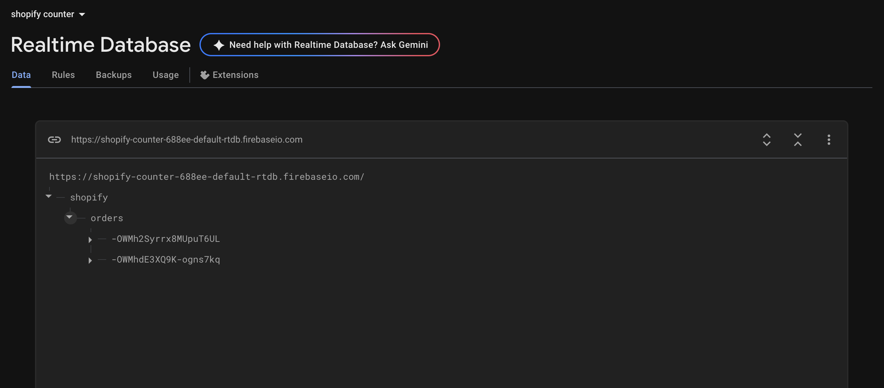
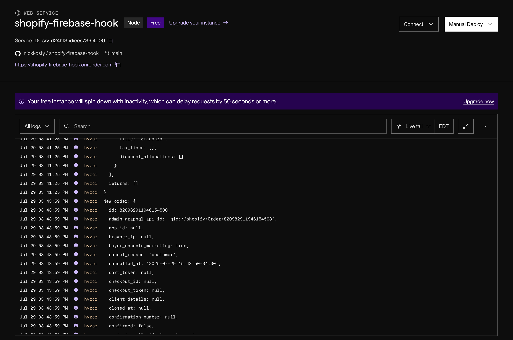

Week 9: Radio, WiFi, Bluetooth (IoT)
Assignment: Program something with IoT
This week I focused on building a system that connects the Shopify API to my MVP that I made. My original goal was to have every order increment my physical counter, but I ran out of time to finish that part. I’ll keep working on it next week.
Step 1: Shopify → Firebase Integration
I wrote a webhook server that listens for new Shopify orders and pushes them to Firebase. Every time an order is placed, the database logs the data and increments a counter.
This part was tricky, there are basically no tutorials online for doing this exact setup. I’ve never worked with databases or cloud functions before, so I had to figure most of it out myself. I used ChatGPT a lot and Googled every roadblock. With a bunch of trial and error, I finally got everything working smoothly.
// server.js
const express = require('express');
const bodyParser = require('body-parser');
const admin = require('firebase-admin');
const crypto = require('crypto');
const app = express();
function verifyShopifyWebhook(req, res, buf) {
const hmacHeader = req.get('X-Shopify-Hmac-Sha256');
const generatedHmac = crypto
.createHmac('sha256', process.env.SHOPIFY_WEBHOOK_SECRET)
.update(buf, 'utf8')
.digest('base64');
if (generatedHmac !== hmacHeader) {
throw new Error('Webhook signature mismatch');
}
}
app.use(bodyParser.json({ verify: verifyShopifyWebhook }));
const serviceAccount = {
type: "service_account",
project_id: process.env.FIREBASE_PROJECT_ID,
private_key: process.env.FIREBASE_PRIVATE_KEY.replace(/\\n/g, '\n'),
client_email: process.env.FIREBASE_CLIENT_EMAIL,
token_uri: "https://oauth2.googleapis.com/token",
};
admin.initializeApp({
credential: admin.credential.cert(serviceAccount),
databaseURL: 'https://shopify-counter-688ee-default-rtdb.firebaseio.com',
});
const db = admin.database();
app.post('/webhook', (req, res) => {
const order = req.body;
const filteredData = {
order_id: order.id,
created_at: order.created_at,
email: order.email,
name: order.name,
total_price: order.total_price,
currency: order.currency,
line_items: order.line_items.map(item => ({
title: item.title,
quantity: item.quantity,
price: item.price,
})),
shipping_address: order.shipping_address
? {
name: order.shipping_address.name,
address1: order.shipping_address.address1,
city: order.shipping_address.city,
zip: order.shipping_address.zip,
province: order.shipping_address.province,
country: order.shipping_address.country,
}
: null,
};
console.log('✅ Order received:', filteredData);
db.ref('shopify/orders').push(filteredData)
.then(() => res.status(200).send('OK'))
.catch(err => {
console.error('❌ Firebase error:', err);
res.status(500).send('Error');
});
});
const PORT = process.env.PORT || 3000;
app.listen(PORT, () => console.log(`🚀 Server running on port ${PORT}`));
This worked flawlessly. I was able to test live orders and saw the counter increment in Firebase in real time.
Step 2: Arduino Integration (Next Week)
I planned to connect Firebase to my ESP32 to react when orders come in, but I didn’t have enough time and energy to finish this part. It’s top of my list for next week and I’m excited to get it working.
Bonus: Candy Dispenser Project
On the side, I also built a candy dispenser using a 3D-printed STL I found online and a servo motor. It dispenses a piece of candy when a button is pressed online.

// Candy Dispenser Arduino Code
#include
#include
Servo myservo;
int servoPin = 26;
int pos = 0;
char state='-';
const char *ssid = "MAKERSPACE";
const char *password = "12345678";
NetworkServer server(80);
void setup() {
ESP32PWM::allocateTimer(0);
ESP32PWM::allocateTimer(1);
ESP32PWM::allocateTimer(2);
ESP32PWM::allocateTimer(3);
myservo.setPeriodHertz(50);
myservo.attach(servoPin, 1000, 2000);
myservo.write(pos);
Serial.begin(115200);
pinMode(2, OUTPUT);
delay(10);
Serial.println();
Serial.println("Connecting to ");
Serial.println(ssid);
WiFi.mode(WIFI_STA);
WiFi.begin(ssid, password);
while (WiFi.status() != WL_CONNECTED) {
delay(500);
Serial.print(".");
}
Serial.println("");
Serial.println("WiFi connected.");
Serial.println("IP address: ");
Serial.println(WiFi.localIP());
server.begin();
}
void loop() {
NetworkClient client = server.accept();
if (client) {
Serial.println("New Client.");
String currentLine = "";
while (client.connected()) {
if (client.available()) {
char c = client.read();
Serial.write(c);
if (c == '\n') {
if (currentLine.length() == 0) {
client.println("HTTP/1.1 200 OK");
client.println("Content-type:text/html");
client.println();
client.print("Click here to get candy!.
");
client.println();
break;
} else {
currentLine = "";
}
} else if (c != '\r') {
currentLine += c;
}
if (currentLine.endsWith("GET /C")) {
state = 'c';
}
if (state == 'c') {
while (pos <= 150) {
pos += 10;
myservo.write(pos);
delay(15);
}
while (pos >= 0) {
pos -= 10;
myservo.write(pos);
delay(15);
}
state = '-';
}
}
}
client.stop();
Serial.println("Client Disconnected.");
}
}
Reflection:
This was one of the most exciting projects so far. I learned a ton about working with webhooks, real-time databases, and cloud servers. Even though I didn’t finish everything, I made major progress and laid the foundation to finish it soon.
Download Files:
Click here to download all project files (literally just the candy dispenser stl)